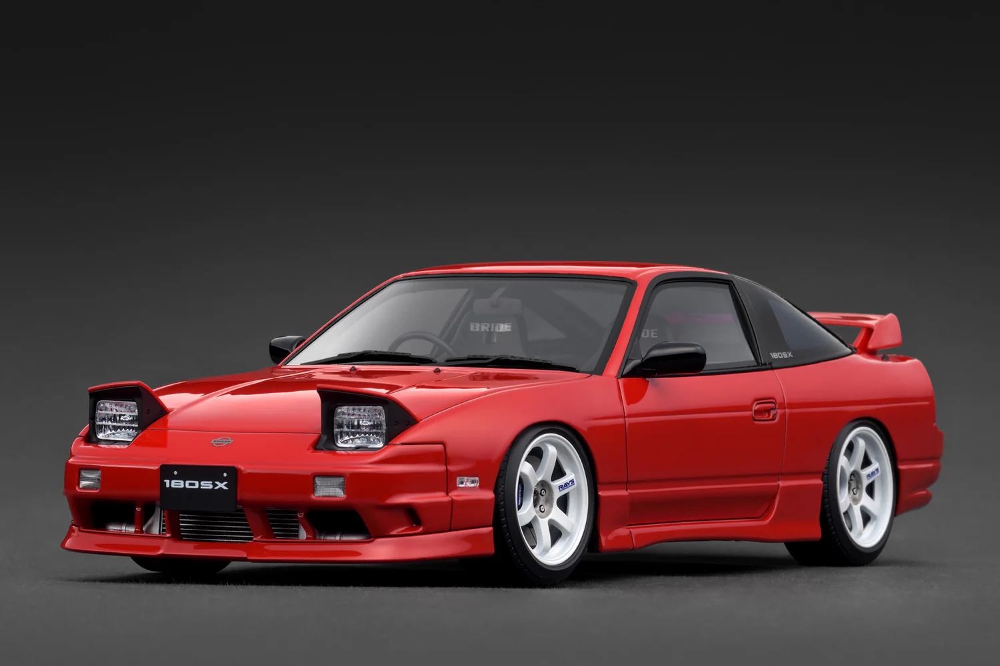

Featured Cars
JDM cars are popular because of their design, speed, and car culture. Here are two classic examples.

Nissan Skyline
The Nissan Skyline is one of the most famous JDM cars. It is known for strong performance, clean style, and its history in street racing and motorsport.
Toyota Supra
The Toyota Supra is a powerful sports car with a big fan base. Many people like it because it looks cool and can be tuned for even more speed.
